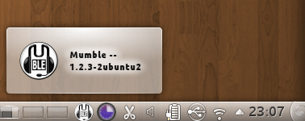
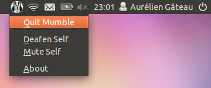

pub_date: 2011-07-19 21:00:00 +01:00
public: yes
tags: ["systemtray","StatusNotifierItem","appindicator","Qt"]
title: "StatusNotifierItem (aka App Indicators) for Qt applications"
In the beginning there was XEmbed...
For years, icons in the "System tray" (alias "Notification area", the small area which traditionally sits close to your clock and where some applications can insert an icon) were implemented using a protocol based on XEmbed. This protocol required the application to create a tiny 24x24 window which would be "swallowed" by the panel. This led to a lot of inconsistency as each application were responsible for the rendering and the behavior of their tiny windows.
Then came SNI
Back in the KDE 4.4 days, Plasma developers introduced a new protocol to replace this XEmbed-based protocol: "Status notifier items" (SNI). This new protocol helps providing better consistency among these icons. Instead of creating and managing tiny windows for the icons, applications describe their icon over DBus, then the UI element (panel or applet or whatever) responsible for displaying the icons takes care of rendering them and handling mouse events, notifying the application when a user wants to show a menu or activate an icon. This makes it possible to provide consistent mouse behavior and rendering (consistent mouse-click behaviors, mouse-over effects, tooltips, desktop-theme-based icon replacements...).
The first implementation of this protocol was available in kdelibs, meaning only KDE applications were able to make use of it.
libappindicator was introduced a bit later
In Ubuntu 10.04 (Lucid Lynx), Canonical Desktop Experience team introduced a new library named libappindicator, an implementation of the SNI protocol targeting GTK applications, making the SNI protocol usable by a wider range of applications.
Introducing sni-qt
Unfortunately there was no way for a Qt-only application to use the SNI protocol: kdelibs is for KDE applications only, and libappindicator is for GTK or GNOME applications.
This is no longer the case in the upcoming Ubuntu 11.10 (Oneiric Ocelot). As part of my work in the Desktop Experience team, I have been working on adding transparent support for the SNI protocol to all Qt applications. This work has been integrated in Oneiric a few weeks ago, and brings SNI goodness to Qt-only applications such as Mumble. Since it does not require any modification of the application itself, it also works for proprietary applications (think Skype).
How it works
SNI support for Qt applications is made of two parts:
- A Qt patch which provides a plugin system for the QSystemTrayIcon class. The default plugin uses the old XEmbed-based protocol. The code for this plugin is in the "qsystemtrayicon-plugin-system-4.7" Qt branch of my Qt clone on Gitorious.
- sni-qt: a QSystemTrayIcon plugin which implements the SNI protocol. sni-qt is hosted on Launchpad: launchpad.net/sni-qt.
The design for this plugin was put together with Qt devs, but the patch will most likely never be integrated upstream in a 4.x release, it is too late for it to go into Qt 4.8 and there is no plan for a 4.9 release. But that only means it will have to go in one of the 5.x releases.
Here are some screenshots of it in action on KDE Plasma Workspace and Unity.

Mumble on KDE Plasma Workspace. Since the icon is exposed as an SNI, it gets a nice Plasma-themed tooltip.

Mumble on Unity. Notice the menubar border around the icon, moving the mouse to the network icon on the right would close Mumble menu and open the network menu, just like a regular menubar.
{kind=link}
{kind=link}